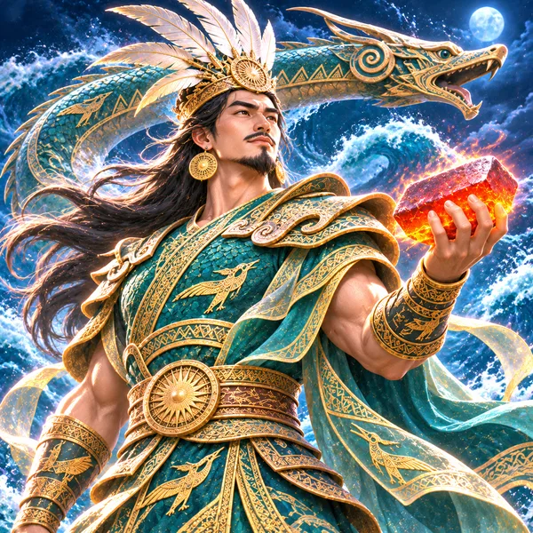

Nhân vật
Thần không ra trận, người kể không bênh ai, và hai đứa trẻ phàm nhân bước lên tiên lộ.
Hai nhân vật chính

Tre Sơn Tông
Cậu bé đốn củi chân núi Tản, theo Lão Tiều từ nhỏ. Thật thà, chậm mà chắc — đúng tính người núi. Căn cơ trời chia: Hộ Vệ.
Ngần Thủy Tông
Cô gái làng chài cửa sông, bạn của Bé Sò. Nhanh, lém, ghét nhất là bị xử thiệt. Căn cơ trời chia: Phá Quân.
Thần và người xưa
Lệ Thiên Đình: hai vị thần không được trực tiếp giao chiến. Thứ hiện trên chiến trường mùa lũ chỉ là pháp tướng — bóng thần chiếu xuống, mạnh bằng sức đồ đệ góp vào.

Sơn Tinh Tản Viên Sơn Thánh
Điềm, chắc, che chở; ít nói, nói là làm. Bốc đồi, dời núi. Đem voi chín ngà, gà chín cựa, ngựa chín hồng mao tới trước và cưới được Mỵ Nương. Là một trong Tứ Bất Tử.

Thủy Tinh Chúa Long Cung
Kiêu, nóng, đa tình; thua một bước nên nhớ dai. Hô mưa, gọi gió, dâng nước, sai thủy quái. Hận Sơn Tinh, không hận đất — nước của chàng mang phù sa cho lúa.
Mỵ Nương
Con gái Hùng Vương thứ mười tám, vợ Sơn Tinh. Hiền, thương cả hai phe. Không bao giờ lên tiếng — chỉ hiện ra bằng những cánh hoa vàng rơi khi có người vượt kiếp.

Lạc Long Quân
Diệt Ngư Tinh bằng khối sắt nung, dâng nước phá hang Hồ Tinh, đánh Mộc Tinh. Giết được yêu nhưng không diệt được oán khí; rồi về thủy cung từ lâu.
Ba người dẫn chuyện
Cũng là ba giọng MC trong phòng live.
Cô Mây
Tiên nữ chép Ngọc Phả của Thiên Đình. Trung lập, kể chuyện có nhịp. Không bao giờ nói trước đáp án — Ngọc Phả là sách trời.
Lão Tiều bênh Núi
Ông tiều phu núi Tản, đồ đệ đời đầu của Sơn Tinh, thầy của Tre. Chậm, khó tính, hay khoe núi. Biết đường núi, sợ nước.
Bé Sò bênh Nước
Cô bé Long Cung, cháu một bà rùa già trong thủy phủ, bạn của Ngần. Nhanh, nhí nhảnh, hay chọc. Bơi giỏi, sợ cái nóng sắt nung.
Trưởng lão hai tông
Ngồi Tụ Linh Trận cùng đệ tử khi tông còn vắng người, truyền linh khí cho lớp sau. Các vị dừng ở Đại Thừa — để đệ tử giỏi vượt lên ngồi trên. Cao Sơn, Quý Minh là hai vị thánh em của Tản Viên trong tín ngưỡng Tam vị Đức Thánh Tản.
Sơn Tông
| Cao Sơn | Đại Thừa · Chiến Tướng |
| Quý Minh | Đại Thừa · Hộ Vệ |
| Thạch Lão | Luyện Hư · Hộ Vệ |
| Mộc Nương | Luyện Hư · Y Sư |
| Vân Đồng | Hóa Thần · Phá Quân |
| Lạc Sứ | Hóa Thần · Y Sư |
Thủy Tông
| Quy Lão | Đại Thừa · Hộ Vệ |
| Lý Ngư Tướng | Đại Thừa · Chiến Tướng |
| Giao Nương | Luyện Hư · Phá Quân |
| Bạng Nương | Luyện Hư · Y Sư |
| Hải Mã Sứ | Hóa Thần · Phá Quân |
| Thủy Vệ | Hóa Thần · Hộ Vệ |